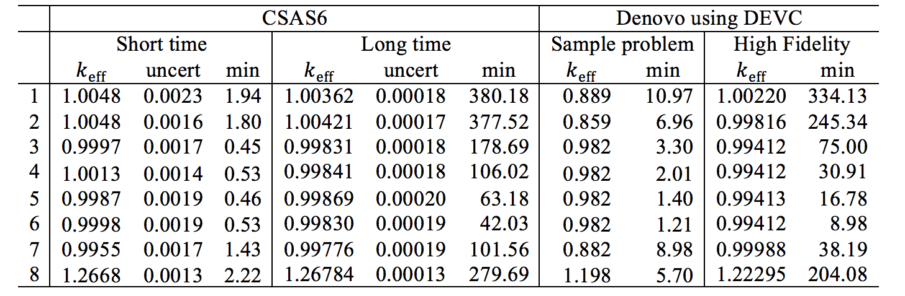

DEVC: Denovo EigenValue Calculation¶
Douglas E. Peplow and Cihangir Celik
Introduction¶
The DEVC (Denovo EigenValue Calculation) sequence is an interface to the Denovo discrete-ordinates package [ESSC10] for calculating criticality eigenvalue problems. This sequence reads an input file very similar to a CSAS6 input file [GPJD+11] that contains an extra block of input for describing the Denovo mesh grid and calculational parameters. Many of the subroutines are shared from the MAVRIC routines that interface with Denovo for fixed-source calculations.
This manual assumes that the user is familiar with the discrete-ordinates method for radiation transport and the Denovo package. DEVC provides an easy way for users to modify existing CSAS6 inputs and use them to run Denovo. The DEVC sequence also provides a way to create mesh geometry for Denovo from the combinatorial solid geometry description used by KENO-VI.
The steps in the DEVC sequence are listed in Table 78.
Step |
Module/Task |
Creates file |
To stop after |
|---|---|---|---|
0 |
Check user input |
||
1 |
Self-shielding (celldata/cellm ix) calculations |
||
2 |
Produces optional *.png plots |
||
Produces optional *.3mdap files (to visualize grid in MeshFileViewer) |
|
||
3 |
Creates AMPX cross sections for the “real” materials |
|
|
4 |
Creates Denovo binary stream input file and the macromaterial table file |
|
|
5 |
Runs Denovo to compute \(k_{ \text{eff}}\) and either the fluxes or the fission source |
|
The DEVC sequence uses KENO-VI geometry. Users can specify what output Denovo will generate: fluxes by space and energy in a binary *.dff (Denovo flux file) file or the space-only fission source distribution in a binary *.dso (Denovo spatial output) file. The eigenvalue is printed in the main output text file.
Some of the more common KENO starting source types are supported. Other starting source types may be added or extended to all of the different array types in the future. Currently, starting sources are not sent to Denovo because the Arnoldi solver does not use it. This may change in the future.
Sequence input¶
The input file for a DEVC calculation looks similar to a CSAS6 input file, as shown in Table 79. The major difference is that the parameter block contains information for the Denovo calculation, not the KENO Monte Carlo calculation. A macromaterial block is used to describe how the KENO-VI materials are mapped onto the Denovo mesh grid. Only multi-group cross-section libraries can be used with Denovo.

|
Parameters block¶
This block contains the parameters for the Denovo eigenvalue
calculation, the grid geometry, and the macromaterials. Boundary
conditions listed in the parameters block will override those listed in
the bounds block (using CSAS6 syntax). Table 80 lists the Denovo
calculation parameters and their default values, and Table 81 lists
the keywords for the setting the boundary conditions and file saving
options. The grid geometry is defined in a sub-block in the parameters
block, or the keyword “gridGeometryID=\ *n*\ ” can be used to point to a
grid geometry defined in its own input block.

|

|
Grid geometry block¶
Grid geometries (“gridGeometry id”) require an identification number
and then a description of a three-dimensional rectangular mesh by
specifying the bounding planes of the cells in each of the x, y, and
z dimensions. The keyword “xPlanes … end” can be used to list plane
values (in any order). The keyword “xLinear n a b” can be used
to specify n cells between a and b. The keywords “xPlanes” and
“xLinear” can be used together and multiple times – they will simply add
planes to any already defined for that dimension. Any duplicate planes
will be removed. Similar keywords are used for the y and z
dimensions.
When using multiple instances of the keywords *``Linear`` and *``Planes`` for
a given dimension, duplicates should be removed from the final list. In
some cases, double precision math will leave two planes that are nearly
identical but not removed (e.g., 6.0 and 5.9999999). To prevent this, a
default tolerance is set to remove planes that are within 10-6
cm of each other. The user is free to change this by using the keyword
“tolerance=” and specifying something else. Note that the tolerance can
be reset to a different value in between each use of *``Linear`` or
*``Planes``.
The keyword “make3dmap” for a particular grid geometry definition will
create a file called “outputName.gridid.3dmap”, which can be
visualized using the Java Mesh File Viewer. These files will contain
crude geometry information (unit, region, material) that corresponds to
the center of each voxel.
Keywords for the grid geometry block are listed in Table 82.

|
Macromaterial block¶
In order to get more accurate solutions from a coarse-mesh discrete-ordinates calculation, Denovo can represent the material in each voxel of the mesh as a volume-weighted mixture of the real materials in the problem. When constructing the Denovo input, DEVC can estimate the volume fraction taken by each real material in each voxel by a sampling method. The user can specify parameters for how to sample the geometry. Note that finer sampling makes more accurate estimates of the material fraction but requires more setup time to create the Denovo input. Users should understand how the macromaterials are sampled and consider that when constructing a mesh grid. This is especially important for geometries that contain arrays. Careful consideration should be given when overlaying a mesh on a geometry that contains arrays of arrays.
Because the list of macromaterials could become large, the user can also
specify a tolerance for how close two different macromaterials can be to
be considered the same, thereby reducing the total number of
macromaterials. The macromaterial tolerance, “mmTolerance=”, is used for
creating a different macromaterial from the ones already created by
looking at the infinity norm between two macromaterials.
The number of macromaterials does not appreciably impact Denovo run time or memory requirements.
Keywords for the macromaterial block are listed Table 83. Two
different sampling methods are available – ray tracing [IPE+09] with the
keyword mmRayTest and point testing [Joh13] with the keyword mmPointTest.

|
Ray tracing¶
This method estimates the volume of different materials in the Denovo
mesh grid elements by throwing rays through the KENO-VI geometry and
computing the average track lengths through the each material. Rays are
traced in all three dimensions to better estimate the volume fractions
of materials within each voxel. The mmSubCell parameter controls how
many rays to trace in each voxel in each dimension. For example, if
mmSubCell=\(\text{\ n}\), then when tracing rays in the
z dimension, each column of voxels uses a set of \(n \times n\)
rays starting uniformly spaced in the x and y dimensions. With rays
being cast from all three orthogonal directions, then a total of
\(3n^{2}\) rays are used to sample each voxel. One can think of
subcells as an equally spaced sub-mesh with a single ray positioned at
each center. The number of subcells in each direction, and hence the
number of rays, can be explicitly given with mmSubCells ny nz nx nz nx
ny end keyword for rays parallel to the \(x\) axis, \(y\) axis,
and \(z\) axis. Fig. 105 shows different subcell
configurations (in two dimensions) for a given voxel.
{kind=link}
Ray tracing is a more robust method compared to the simple point testing method used in previous versions of SCALE/MAVRIC; however, it requires more memory than point testing. Ray tracing gives more accurate estimates of volume fractions because track lengths across a voxel give more information than a series of test points. Ray tracing is also much faster than point testing because the particle tracking routines are optimized for quickly determining lists of materials and distance along a given ray.
Ray tracing operates on the grid geometry supplied by the user and shoots rays in all three directions starting from the lower bounds of the mesh grid. An example of arbitrary assembly geometry is shown in Fig. 106. A ray consists of a number of steps that corresponds to crossing a different material along the path of the ray. Ratios of each step’s length to the voxel length in the ray’s direction determine the material volume fraction of that step in that voxel, and summation of the same material volume fractions gives the material volume fraction of that material in that voxel. Ray tracing through a single voxel that contains a fuel pin is illustrated in Fig. 107.
{kind=link}
Fig. 106 Geometry model (left) and the Denovo representation (right) of an assembly using macromaterials determined by ray tracing.¶
The final constructed macromaterials for this model are also shown in Fig. 106. Voxels that contain only a single material are assigned that original material number in the constructed macromaterials. For the voxels that contain a fuel pin with three different materials, the result is a new macromaterial consisting of the volume weighted fractions of each original material.
After the rays are shot in all three directions, the material volume fractions are updated and macromaterials are created by using these material volume fractions. Material volume fraction calculations for a single voxel, as shown in Fig. 107, are given by
where Fm = sampled fraction of material m in the voxel,
d = direction of the rays (x, y, z),
r = ray number,
Nr = total number of rays in the voxel for direction of d,
s = step number,
Ns = total number of steps for ray r in the voxel for direction of d,
Ld,r,s = length of the steps s for ray r in the voxel for direction of d,
Ld, = length of the voxel along direction of d,
ms = material of step s,
m = material number,
Nm = total number of materials in the voxel, and
Vm = volume fraction of material m in the voxel.
{kind=link}
Point testing¶
The recursive bisection method uses a series of point tests to determine the macromaterial fractions. For a given voxel, the material at the center is compared to the material at the eight corners. If they are all the same, the entire volume is considered to be made of that material. If different, the volume is divided into two in each dimension. Each subvolume is tested, and the method is then applied to the subvolumes that are not of a single material. When the ratio of the volume of the tested region to the original voxel becomes less than a user-specified tolerance (in the range of 10-1 to 10-4), then further subdivision and testing are stopped. This is illustrated in Fig. 108.
{kind=link}
In point testing, the keyword “mmTolerance=f” is interpreted to be
where f is the smallest fraction of the voxel volume to consider. This
same tolerance f is also used to limit the number of macromaterials.
Before a new macromaterial is created, if one already exists where the
fraction of each actual material matches to within the given tolerance,
then the existing material will be used. If using only a single point at
the center of each voxel, use “mmTolerance=1”. The mmSubCell keyword is
not used in point testing.
Example¶
Fig. 109 shows an example of a cask geometry with two types of
spent fuel (yellows), steel (blue), resin (green), and other metals
(gray). When the Denovo geometry is set up by testing only the center of
each mesh cell, the curved surfaces are not well represented (upper
right). By applying the ray-tracing method and defining a new material
made of partial fractions of the original materials, an improved Denovo
model can be made. In the lower left of the figure, the Denovo model was
constructed using one ray (in each dimension) per voxel and a tolerance
of 0.1. This gives 20 new materials that are a mixture of the original
13 actual materials and void. With mmSubCells=3 and an mmTolerance=0.01,
139 macromaterials are created.
A macromaterial table listing the fractions of each macromaterial is saved to a file called “outputName.mmt”, where outputName is the name the user chose for his or her output file. This file can be used by the Mesh File Viewer to display the macromaterials as mixtures of the actual materials, as seen in lower row of Fig. 109. See the Mesh File Viewer help pages for more information on how to use colormap files and macromaterial tables.
{kind=link}
Starting sources block¶
The default KENO-VI starting source is “flat over the volume specified by the unrotated, untranslated geometry record specified in the first position of the global unit boundary record in fissile material only”. For DEVC, the default starting source strength is uniform in the fissile voxels contained within the bounding box of the global unit (uniform density). If macromaterials are used, the amounts in each voxel are volume averaged between fissile and non-fissile materials. Table 84 and Table 85 describe the starting sources available in the DEVC interface to Denovo.
KENO-VI start type |
DEVC |
|
|---|---|---|
nst=0 |
the first surface of boundary (default) |
The bounding box of global unit |
nst=0 |
Within boundary of global array having a reflector key set to false |
Not supported |
nst=0 |
A cuboid defined by XSM, XSP, YSM, YSP, ZSM, and ZSP |
Supported |
nst=1 |
A cuboid defined by XSM, XSP, YSM, YSP, ZSM, and ZSP with cosine distributions |
Supported |
nst=2 |
Arbitrary fraction (FCT) in element NXS, NYS, NZS of the global array with the remainder in a cuboid defined by XSM, XSP, YSM, YSP, ZSM, and ZSP with cosine distributions |
Supported for some array types (see Table 85) |
nst=3 |
At the location TFX, TFY, TFZ in the element NXS, NYS, NZS of the global array |
Supported for some array types (see Table 85) |
nst=4 |
At the location TFX, TFY, TFZ in units NBX of the global array |
Supported |
nst=5 |
Across units NBX in the global array |
Not supported |
nst=6 |
List of points TFX, TFY, TFZ in global coordinates |
Limited to 1 point |
nst=6 |
List of points TFX, TFY, TFZ in element NXS, NYS, NZS of the global array |
Limited to 1 point and only for some array types (see Table 85) |
nst=7 |
Flat distributions in X and Y with [1-cos2(z)] in Z for a cuboid defined by XSM, XSP, YSM, YSP, ZSM, and ZSP |
Supported |
nst=8 |
Flat distributions in X and Y with a segmented distribution in Z for a cuboid defined by XSM, XSP, YSM, YSP, ZSM, and ZSP |
Not supported |
nst=9 |
Use a mesh source lite file |
Not supported |
no arrays |
supported |
|---|---|
cuboid |
supported |
hexagonal |
supported |
shexagonal |
no |
rhexagonal |
no |
dodecahedral |
no |
The starting source initialized in Denovo is always a volumetric source—DEVC does not create point sources (which would activate the first collision option in Denovo).
Sequence Output¶
The main text output file consists of the output from the cross-section processing codes and Denovo. The user should examine the output and pay attention to any warnings or errors. Table 86 lists the files generated during the DEVC sequence.
Filename |
Viewer |
Description |
|
|---|---|---|---|
Output Summary |
|||
input.out |
main text output file, contains \(k_{\math rm{\text{eff}}}\) |
||
input.msg |
messages file |
||
Denovo |
|||
xkba_b.inp |
Va |
input file for Denovo – if this file is renamed to have a *.dsi extension (Denovo simple input), it is viewable in the Mesh File Viewer |
|
ft02f001 |
AMPX formatted cross sections for Denovo |
||
input.mmt |
V |
macromaterial table, use with *.dso or *.dsi file |
|
input.dff |
V |
Denovo fission fluxes |
|
input.dso |
V |
Denovo fission source distribution |
|
aV – can be displayed with the Mesh File Viewer. |
Using the mesh file viewer¶
The Mesh File Viewer is a Java utility shipped with SCALE that is used for viewing mesh tallies from Monaco, as well as importance maps and mesh-based sources in MAVRIC. The Mesh File Viewer can be used with DEVC to view the Denovo input file (*.dsi, showing the starting source), the Denovo output fission source distribution (*.dso) file, or the Denovo output flux (*.dff) file.
With any Denovo file, material information for each voxel can be displayed. Users can use the graphical user interface to select colors for each material in the DEVC input and save them to a colormap text file (*.cmp) for later use. For example, Fig. 110 shows a cask model that has 13 materials with the default colors assigned by the viewer. A better color map (uranium is yellow, steel is blue, etc.) and an image using that color map are also shown in Fig. 110.
{kind=link}
If the Denovo input was made using the mixed macromaterials, that can also be shown with the Mesh File Viewer. When one of the mesh files is loaded and the geometry is displayed (e.g., the materials for a cask model shown in Fig. 111), there will be many values since each macromaterial is treated by the Java viewer as a separate material. Redefining the color map using the GUI is not realistic.
A colormap needs to be defined for the original materials of the problem. For this example, there are 13 original materials, but when using macromaterials, 73 macromaterials are used in the discrete-ordinates model (as listed in the *.mmt file). The colormap file should only contain values for the 13 original materials. When loading the colormap, a corresponding *.mmt file can also be loaded. This will display mixed colors for the macromaterials, as shown in Fig. 111.
The final result is an image where the colors for the different values of the geometry attribute (which in the above example is material) are mixed in the ratio of the macromaterial definition.
{kind=link}
Viewing the starting source¶
The Java MeshFileViewer (scale/cmds/meshview) can be used to visualize the Denovo binary stream input file to show materials and starting source strengths. An example is shown in Fig. 112.
Material Numbering
The cross sections produced by the SCALE cross-section mixing module ICE typically have a number of materials equal to the maximum material ID specified by the user in the “read composition” block. For a user input that contains materials 1, 3, and 5, the GIP-formatted cross-section file will contain five entries. For each lattice cell calculation that uses a cellmix= parameter, one more entry is contained in the GIP file. Hence, the GIP file does not contain the user’s value from the “cellmix=” parameter but instead numbers the cellmix materials sequentially starting from 1+maximum(material ID). The Denovo geometry input and macroMixTable file produced by DEVC are modified to match the GIP cross-section file. When viewing the Denovo binary input file with the Mesh File Viewer, the GIP numbering for materials will be seen.
{kind=link}
Sample Problems¶
Sample problems have been made that correspond to the eight CSAS6 sample problems. In each problem, the KENO parameters block was commented out, a parameters block containing Denovo calculation parameters was added, and a grid geometry block was added. These sample problems use a coarse discretization and loose tolerances to obtain a short runtime. Users will typically use much finer discretization (mesh, quadrature) and higher fidelity parameter settings for real eigenvalue calculations. The voxelized geometry and starting source distribution are shown below in Fig. 113.
Results for the sample problems are displayed in tab2-4a-10. The
sample problems used QR 1/1, a P0 scattering expansion, a k
tolerance of 0.001 and coarse meshes for speed. The higher fidelity runs
used finer spatial meshes, default parameters of QR 2/2, P0
scattering expansion, and the default k tolerance (10:sup:-5).
Results for the longer-time CSAS6 and higher fidelity Denovo
calculations are shown in Fig. 114.
{kind=link}
Fig. 113 Denovo geometry (left) and starting source distribution (right) for the sample problems.¶
{kind=link}
|  |
- ESSC10
Thomas M. Evans, Alissa S. Stafford, Rachel N. Slaybaugh, and Kevin T. Clarno. Denovo: A new three-dimensional parallel discrete ordinates code in SCALE. Nuclear technology, 171(2):171–200, 2010. Publisher: Taylor & Francis.
- GPJD+11
Sedat Goluoglu, Lester M. Petrie Jr, Michael E. Dunn, Daniel F. Hollenbach, and Bradley T. Rearden. Monte Carlo criticality methods and analysis capabilities in SCALE. Nuclear Technology, 174(2):214–235, 2011. Publisher: Taylor & Francis.
- IPE+09
Ahmad M. Ibrahim, Douglas E. Peplow, Thomas M. Evans, John C. Wagner, and Paul PH Wilson. Improving the Mesh Generation Capabilities in the SCALE Hybrid Shielding Analysis Sequence. Trans. Am. Nucl. Soc, 100:302, 2009.
- Joh13
Seth R. Johnson. Fast mix table construction for material discretization. In Proceedings of the 2013 International Conference on Mathematics and Computational Methods Applied to Nuclear Science and Engineering-M and C 2013. 2013.